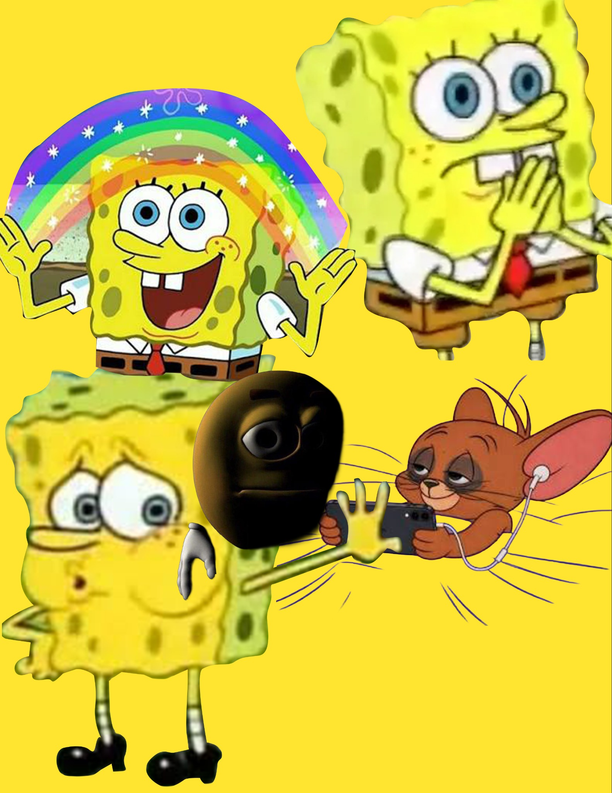
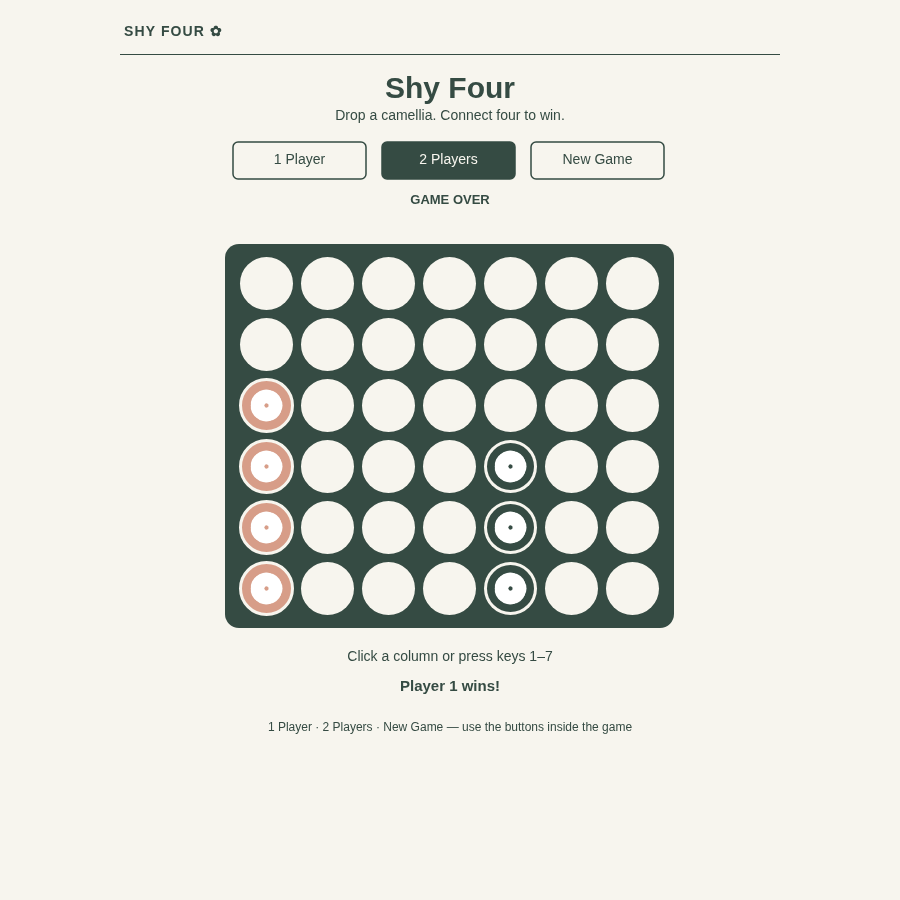

Experiment,
remix, repeat.
ART 74 introduced me to new ways of making: manipulating images, remixing familiar media, editing through time, and designing stories with code. Each piece challenges how an image or an interaction can carry meaning.
ART 74 projects.

Glitch: Breaking the Image
Digital errors and color shifts become part of the visual language.

Midnight Terror
Characters from different worlds form a new humorous horror scene.

Classic
A video experiment that brings Resident Evil and Valorant into dialogue.

Draw a Rose
A drawing that unfolds one hyperlink at a time.

Camellia Drawing Tool
A simple drawing tool with ten brushes, shapes, and save or clear controls.

Shy Four
A flower-themed Connect 4 game with one-player and two-player modes.
Camellia Drawing Tool
Draw with ten brushes using keys 1–0. Press X to clear your canvas or P to save an image. You can also use the buttons below the canvas.
Shy Four — Connect 4
Drop a camellia into a column to connect four in a row. Play against the computer or with a friend, and select New Game whenever you want to start over.